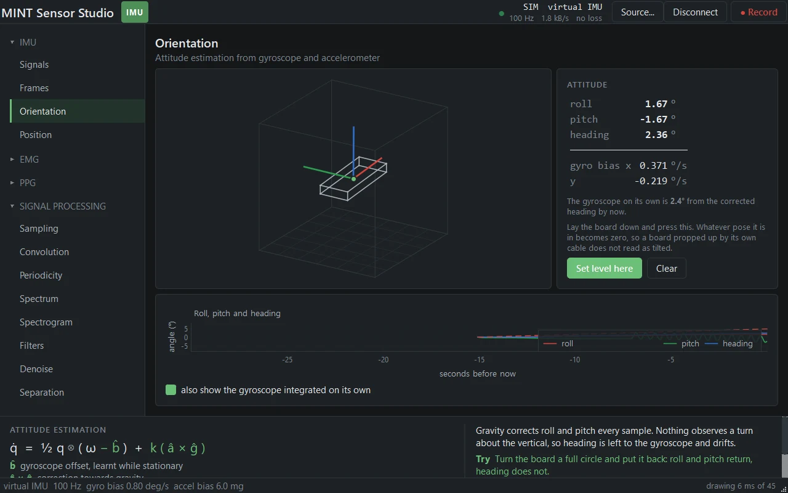
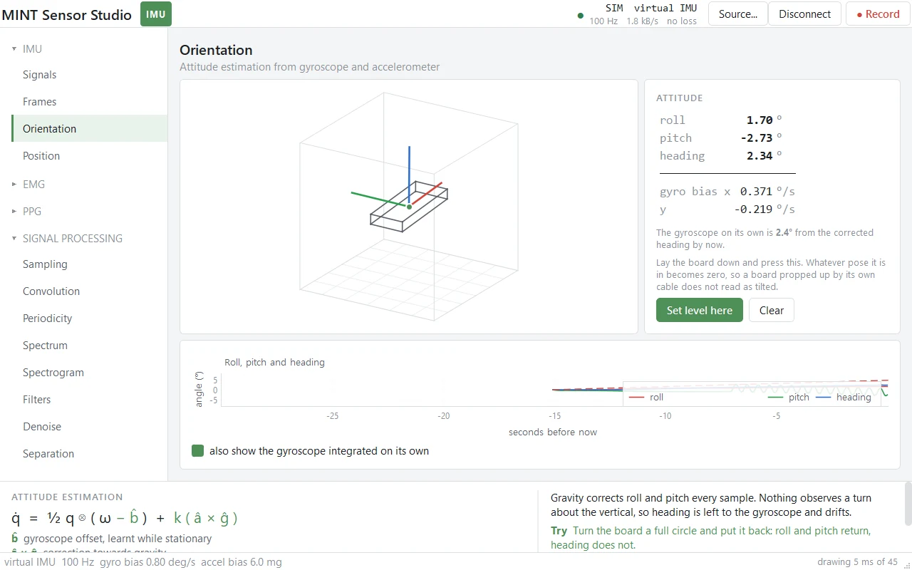
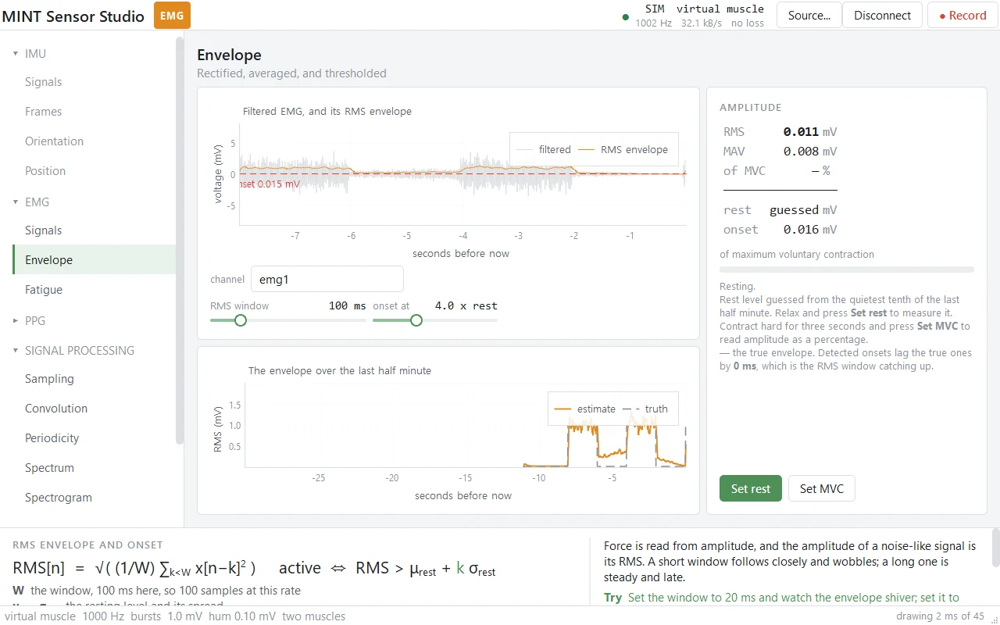
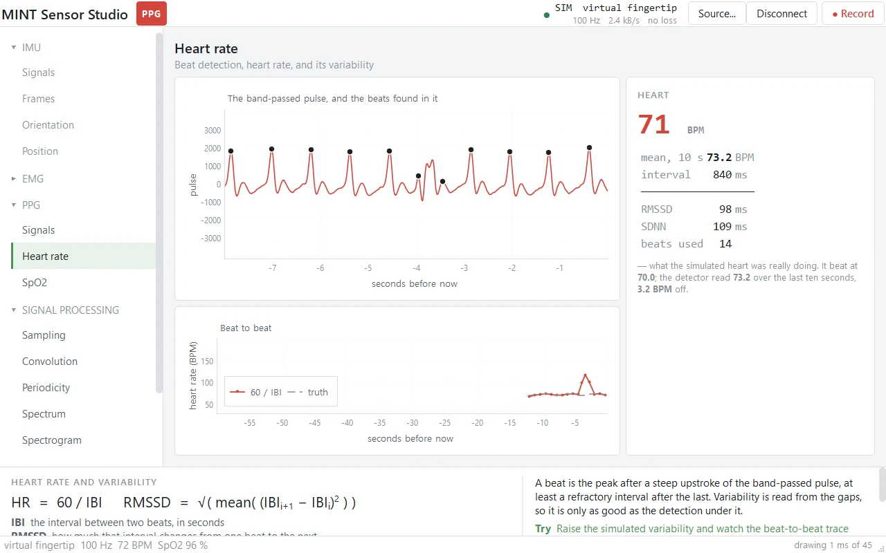
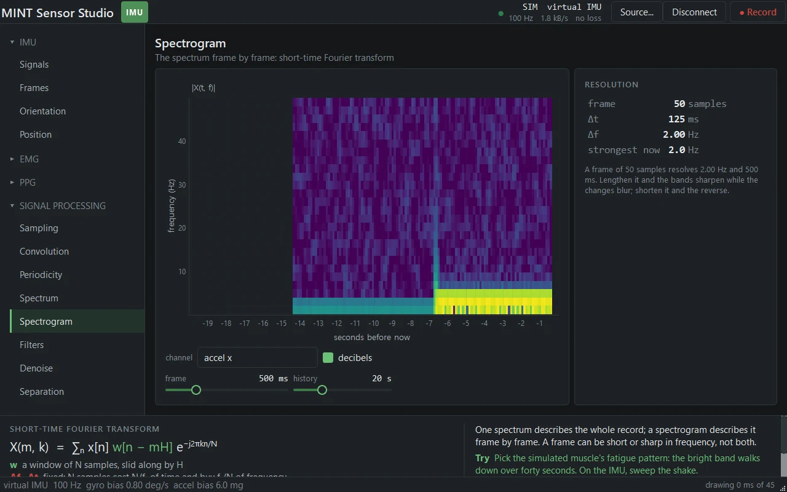

Development · 2026
MINT Sensor Studio
One window for sensors and the methods that read them, written as course material.
SWAppIMUEMGPPGPython


What it does
- Puts one live signal on screen, from an IMU, an EMG board or a pulse oximeter, over a cable or the radio, from a recording, or from a simulated sensor.
- Every sensor has a simulated version whose faults are set by the user, so its truth is known and an estimate's error can be measured rather than inferred.
- Eighteen pages in the rail: IMU (Signals, Frames, Orientation, Position), EMG (Signals, Envelope, Fatigue), PPG (Signals, Heart rate, SpO2), and signal processing for any of them (Sampling, Convolution, Periodicity, Spectrum, Spectrogram, Filters, Denoise, Separation).
- The panel along the bottom gives each page's equation, what its symbols are, why the page behaves as it does, something to try, and a link to read more.
Engineering
- Records to CSV and plays recordings back at speed. Arduino sketches for an IMU and an analog board are included.
- A window check drives every page on every simulated sensor, measures frame time against a budget, and fails on overlapping text; CI runs it off screen on Linux beside an estimator check on three Python versions.
- Three releases: v1.0.0, v1.0.1 and v1.1.0, the last after a merge with the development side's update.
Facts
- Year
- 2026
- Status
- Public, release v1.1.0
- Stack
- Python, PySide6, pyqtgraph, NumPy, SciPy
- Context
- Course material for MOBI311, Sensor Theory and Signal Processing I
Figures


